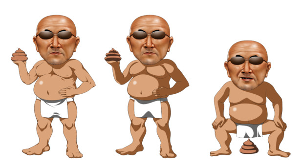

「邪淫」というのはね
たとえば おしっこするところを さわると 気持ちがいいとか
あるいは おしっこするところを こすりつけると 気持ちがいい
といったことを
「邪淫」というんだ。
よい子のみんなの こころは 心臓に あるんだよ。
そして 心臓と おしっこするところは どちらが 上かな？
もちろん 心臓のほうが 頭に近いから
今 邪淫を 行なっていない子は
これから先 邪淫を しないようにしようね。
今 邪淫を行なっている 良い子は やめようね！
そして お父さん お母さんを含めた みんなを 大好きになって（大事にして）
みんなのために
